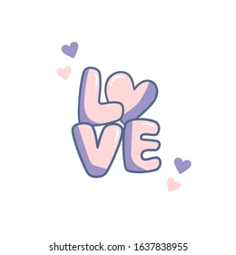
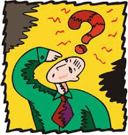
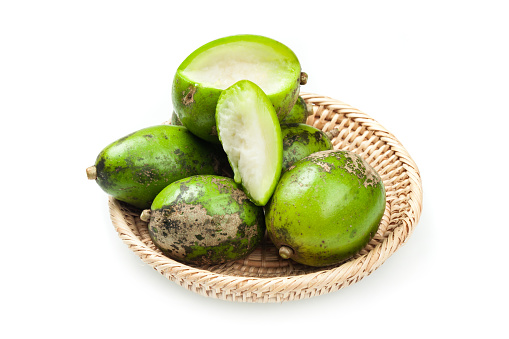
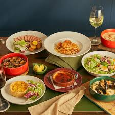
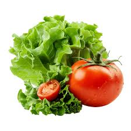
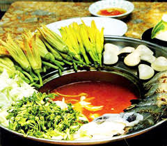
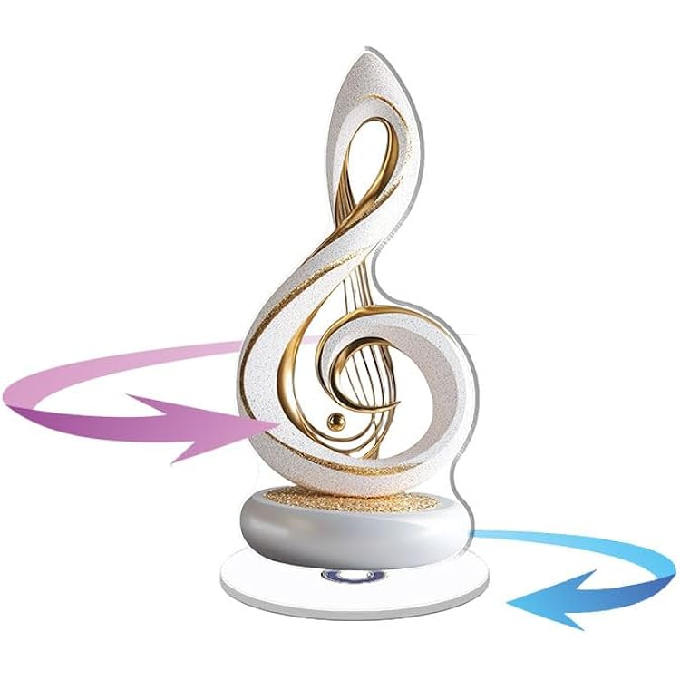

|
 Ai? Cái gì? Ở đâu? ... |
|
| Tình yêu và gia đình | |
Trầu cau Tình yêu là gì? Là ta yêu một người mỗi ngày trong một năm. Mỗi năm trong một đời người... | |
Xây dựng hạnh phúc gia đình qua những bữa cơm hằng ngày Nói đến hạnh phúc gia đình chúng ta thường mô tả bằng những từ thật đẹp đẽ và được thể hiện qua những giá trị đạo đức rất đáng trân trọng như tình yêu, lòng chung thủy, tình nghĩa vợ chồng, lòng yêu thương, hy sinh cho con cái, sự quý trọng, hiếu để của con cháu với cha mẹ, ông bà... | |
| Sức khỏe | |
10 lời khuyên trong dinh dưỡng Cơ thể chúng ta cần nhiều chất dinh dưỡng từ nhiều nguồn lương thực khác nhau. Vì vậy chúng ta nên thay đổi các loại lương thực khác nhau. Chúng ta không cần kiêng chi cả - quan trọng là chú ý đến số lượng... | |
Làm sao để bỏ thuốc lá?Sức khoẻ của chính bạn. Không hút thuốc lá tức là giảm thiểu đáng kể rủi ro mắc các loại bệnh ung thư và sức khoẻ sẽ tăng lên đáng kể so với khi còn hút thuốc. Về đầu trang | |
| Du lịch | |
Các tour mới nhất
| |
Các điểm du lịch nổi tiếng thế giới
| |
| Ẩm thực | |

| |
| Âm nhạc | |
Nhạc thiếu nhi
| |
| Dân ca | |
Nhạc thiếu nhi
| |